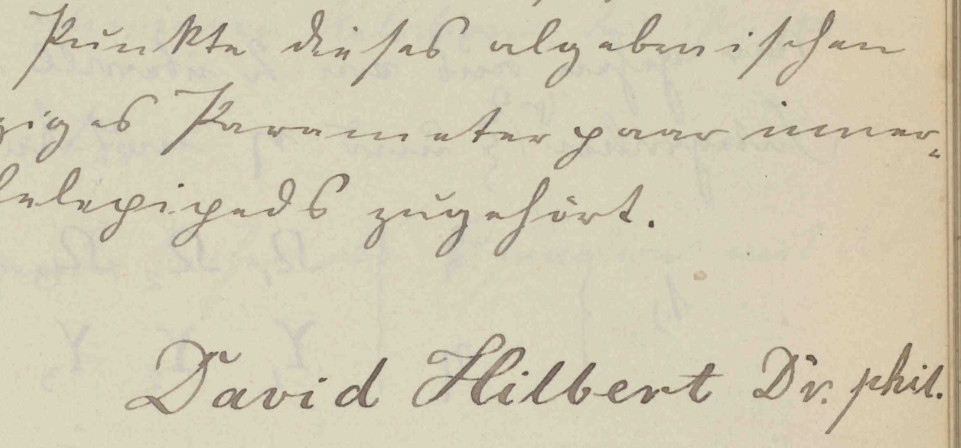
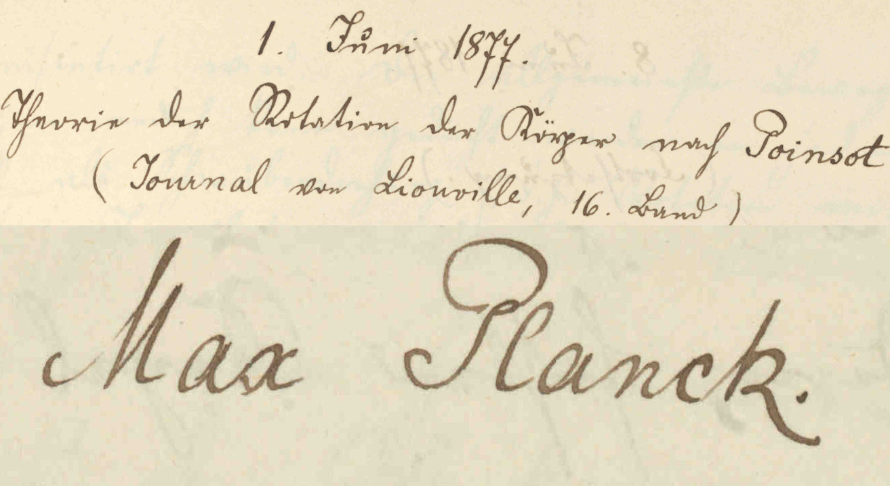
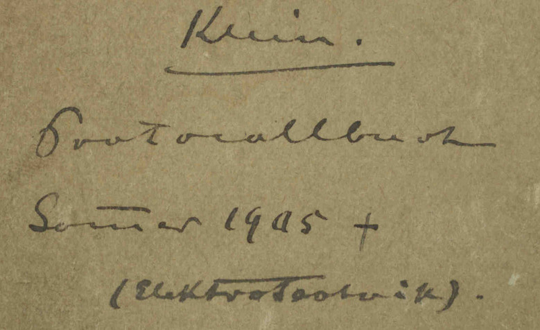
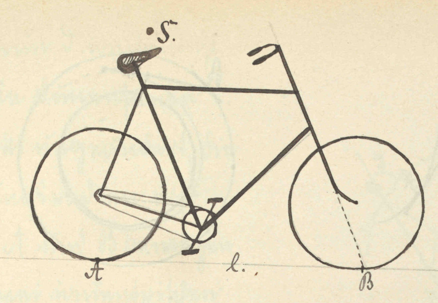

Editorische Notiz
Über die Felix Klein Protokolle
In der Bibliothek des Mathematischen Instituts der Georg-August-Universität Göttingen befinden sich 29 Bände mit Protokollen zu Seminaren, welche unter der Leitung von Felix Klein von 1872 bis 1912 in Göttingen, Erlangen, München und Leipzig gehalten hat. Unter den Vortragenden finden sich neben vielen anderen: Axel Harnack, Adolf Hurwitz, Paul Gordan, Max Planck, Ferdinand von Lindemann, Luigi Bianchi, Giuseppe Veronese, Eduard Study, Otto Hölder, David Hilbert, Max Dehn, Constantin Carathéodory, Paul Ehrenfest, Max Born, Alfred Haar, Otto Toeplitz.
Unter der Leitung von Chet Grycz und Ardon bar Hama und finanziert vom Clay Mathematics Institute wurden die Protokolle eingescannt und sind nun auf den Seiten des Mathematischen Instituts in Göttingen zu finden. Eugene Chislenko and Yuri Tschinkel haben dazu einen Artikel in den Notices der AMS verfasst
Über diese Website
Hier findet man ein Verzeichnis sämtlicher Protokolle, das heißt eine Transkription von Titel, Namen der Vortragenden, Datum und Seitenzahl aller Vorträge. Außerdem werden Links zu den entsprechenden gescannten Seiten gegeben und es ist möglich diese direkt zu betrachten.
Transkriptionsprinzip:
Bei der Übertragung der verschiedenen Handschriften wird, abgesehen von den Daten der Vorträge, so originalgetreu wie möglich transkribiert. Weder Orthographie noch Interpunktion werden modernisiert. Verdoppelungsstriche über Konsonanten werden durch doppelte Schreibung ersetzt. Zeilenumbrüche werden nicht erhalten. Es wird nicht kenntlich gemacht ob die verwendete Schrift die deutsche Kurrentschrift oder lateinische Schreibschrift ist. Sämtliche Anmerkungen, Zusätze, Ergänzungen von Namen, alternative Lesarten und Auflösungen von Abkürzungen sind in eckige Klammern geschrieben. Diese Kommentare lassen sich oben ein- und ausschalten. In den seltenen Fällen, in denen eckige Klammern in der Handschrift auftauchen, werden diese typographisch unterscheidbar von Kommentaren wiedergegeben: [Kommentar], $[$eckige Klammern im Original$]$; hier ein Beispiel.
Besonderheiten bei den einzelnen Daten:
Bei allen Einträge zeigt das Zeichen an, dass die Information von einem vorigen Eintrag übernommen wurde und nicht an dieser Stelle in der Handschrift steht.
Kontakt
Außerdem ist zu erwarten, dass mir einige Fehler der Transkription unterlaufen sind. Über bug reports, feature requests und Anmerkungen jeglicher Art würde ich mich sehr freuen. Auf meiner Seite bei der FU-Berlin befinden sich Kontaktdaten.
Danksagung
Vielen Dank an alle, die an dem Einscannen der Protokolle beteiligt waren! Dank an Christian Stump, der mich auf die gescannten Protokolle aufmerksam gemacht hat. Herzlichen Dank an Louis Theran, dessen Wissen über jquery und javascript beim Erstellen dieser website sehr hilfreich war.
Aus den Protokollen
   Editorial note
About the Felix Klein Protokolle
The Library of the Mathematical Institute of the Georg-August-Universität Göttingen holds 29 volumes with protocols of seminars, which were held by Felix Klein between 1872 and 1912 in Göttingen, Erlangen, München and Leipzig. The speakers include among many others: Axel Harnack, Adolf Hurwitz, Paul Gordan, Max Planck, Ferdinand von Lindemann, Luigi Bianchi, Giuseppe Veronese, Eduard Study, Otto Hölder, David Hilbert, Max Dehn, Constantin Carathéodory, Paul Ehrenfest, Max Born, Alfred Haar, Otto Toeplitz.
The Protokolle were scanned by Chet Grycz and Ardon bar Hama, funded by the Clay Mathematics Institute and can now be found at the Math Institute in Göttingen. Eugene Chislenko and Yuri Tschinkel wrote a paper in the Notices of the AMS about them.
About this page
The goal of this website is to provide a complete index of all the protocols, i.e a transcription of the title, name of the speaker, date and page number of every talk. You can also find links to the scanned pages and it is possible to view them on directly this site.
Transcription rules:
The transliteration of the various handwritings is done as faithfully as possible. Neither orthography nor punctuation is modernized. Macrons on consonants are substituted by a double consonant. Line breaks are not preserved. It will not be indicated whether German Kurrent or Latin handwriting is used. All notes, additions, completions of names, alternative readings and resolutions of abbreviations are written in square brackets. Those comments can be switched on and off with a button in the menu bar. In the rare cases where square bracket occur in the manuscript, they will be typographically distinct from comments: [comments], $[$square brackets in the original$]$; see here for an example.
Features of the transcribed data:
The icon tells you that this information comes from a previous talk and is not in the manuscript at that place.
Contact me
I expect that I made quite some mistakes in the transcription. I would be very happy about bug reports, feature requests and all sorts of comments. Contact details can be found on my page at the FU-Berlin.
Acknowledgements
Thanks to all the people who were involved in scanning the documents! Thanks to Christian Stump who told me about the scanned documents. Many thanks to Louis Theran, whose knowledge about jquery and javascript was very helpful when setting up this site.